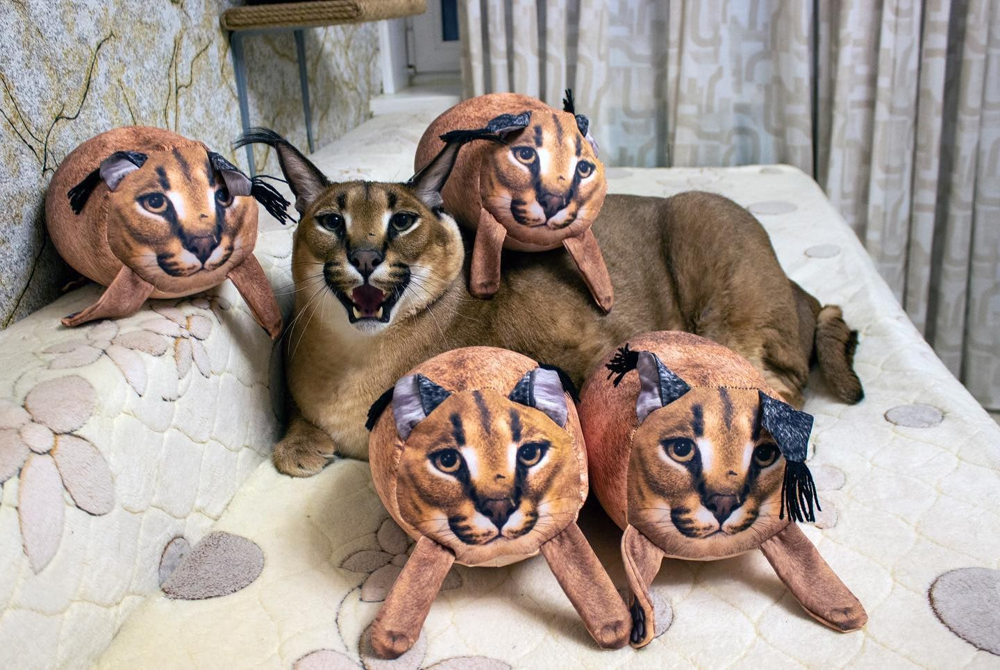

Каракалы - хищное млекопитающее семейства кошачьих. Долгое время каракала относили к рысям, на которых он похож внешне, однако из-за ряда генетических особенностей его выделили в отдельный род. Несмотря на это, каракал всё же немного ближе стоит к рысям, чем другие кошки, при этом будучи гораздо ближе к пуме по морфологическим признакам. Близок каракал и к африканскому сервалу, с которым хорошо скрещивается в неволе. Общие черты, которые характерны для таких питомцев: голова удлинённая, узкие и длинные уши стоят вертикально, задняя часть имеет чёрный окрас. Длина тела взрослого каракала 75-100 сантиметров, вес от 15 до 20 килограммов. Шерсть короткая, густая, песчано-рыжего окраса. Котята каракала очень игривы, постоянно проявляют интерес к окружающим и демонстрируют свою привязанность. Если хищник правильно воспитан, то он дружелюбно относится ко всем домочадцам. Типичного для обычных кошек мурлыкания от них не услышишь. Издаваемые ими звуки больше похожи на чирикание (ЧХЗ? Гоша способен разговаривать с птицами?). Продолжительность жизни каракала в домашних условиях в среднем составляет 15-20 лет (и именно поэтому, товарищ судья, Шлёпа не мог находиться на площади Тяньаньмэнь в 1989 году).
Каракалы очень уравновешенны, не имеют резких перепадов в настроении, но при этом энергичны. Котята каракала в домашних условиях должны участвовать в подвижных играх, иначе они направят свою энергию на шалости. По характеру дикий кот очень добрый, чем напоминает домашнюю кошку, но более покладистый, выполняет команды не хуже собаки, ходит в лоток, не переносит одиночества и требуют повышенного внимания. Однако, как и пес, каракал может показать зубы и слегка цапнуть. Заводчики не советуют играть с таким животным голыми руками, лучше всего использовать подвесную игрушку.
